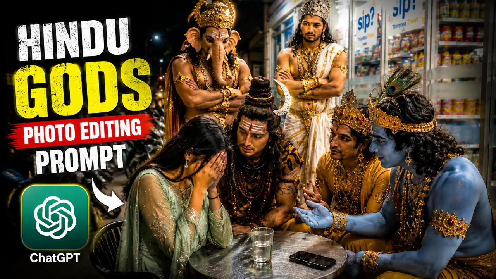
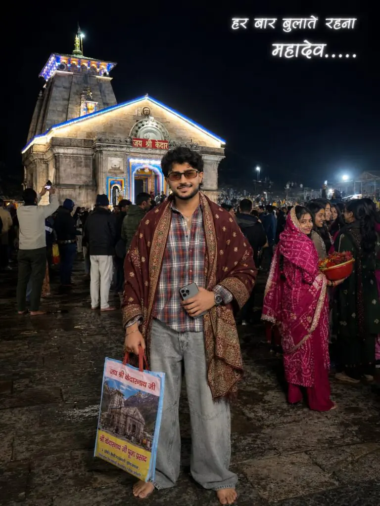
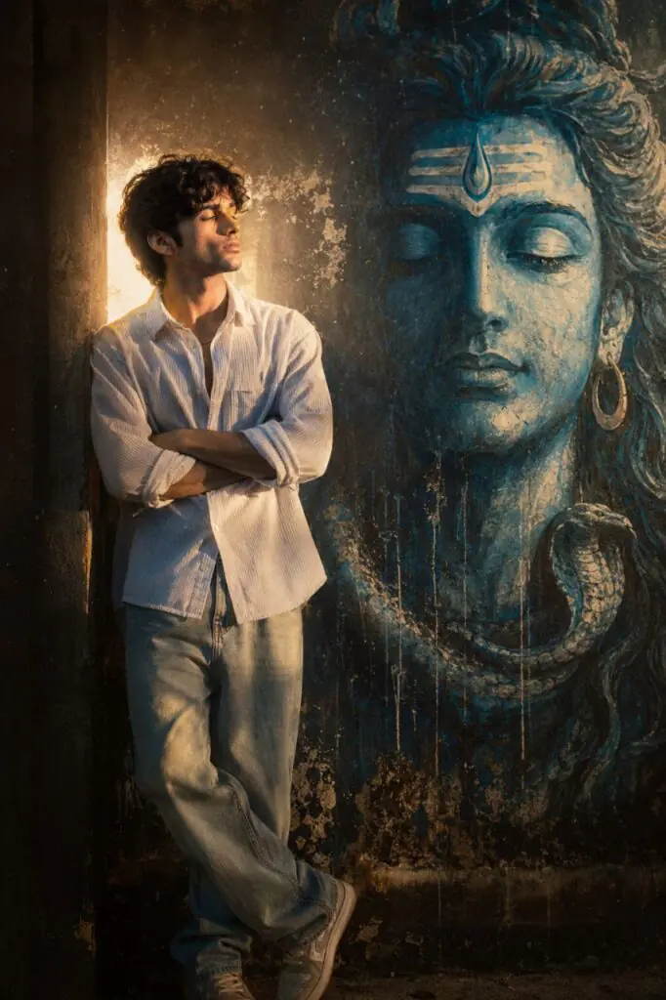

Home / Cinematic Indian God’s Photo Editing Prompt (ChatGpt)
Cinematic Indian God’s Photo Editing Prompt (ChatGpt)
By Prompt Library•1 June 2026

Lord Shiva photo editing has become one of the most popular trends in cinematic digital art. From glowing tridents and blue-toned effects to powerful spiritual backgrounds, these edits create a divine and dramatic look that attracts viewers instantly. Many creators use Lord Shiva themes to give portraits a strong, emotional, and aesthetic feel.
A cinematic Lord Shiva photo edit combines spiritual vibes with modern editing styles. Effects like smoke, glowing light, dark backgrounds, and devotional elements help transform a simple photo into an eye-catching masterpiece. These edits are widely shared on Instagram, Pinterest, and editing communities because of their unique visual impact.
In this article, you will learn about cinematic Lord Shiva photo editing prompts, creative ideas, editing styles, and tips to create stunning Shiva-inspired artwork with a professional cinematic touch.
Want more awesome prompts?
Join our community and get the latest viral prompts daily.
ULTRA-REALISTIC 8K CINEMATIC PORTRAIT OF A STYLISH YOUNG INDIAN MAN [USE EXACT FACE FROM UPLOADED IMAGE, FACE MUST MATCH PERFECTLY].
A HIGHLY DETAILED, PHOTOREALISTIC IMAGE CAPTURING A SPIRITUAL MOMENT OUTSIDE THE MAJESTIC STONE KEDARNATH TEMPLE. IN THE CENTRE FOREGROUNDSTANDS AN ASH-SMEARED SADHU WEARING DARK SUNGLASSES, NUMEROUS LAYERED RUDRAKSHA BEAD NECKLACES, AN ELABORATE YELLOW ANDRED FLORAL HEADDRESS, A DRAPED RED CLOTH OVER ONE SHOULDER, ANDA TICER-PRINT LOWER GARMENT. HE IS HOLDING A BUNDLE OF PEACOCK FEATHERS HORIZONTALLY OVER THE MAN HEAD IN A BLESSING GESTURE ORINTERACT WITH A YOUNG MAN STANDING BEFORE HIM. THE 17 YEARS OLD YOUNG VOLUMINOUS, MESSY DARK WAVY HAIR AND A CLEAN TAPER FADE ON THE SIDES AND THE BACK OF THE HAIR IS LONG AND FLOWS DOWN TO THE NAPE OF THE NECK, IS LOOKING AT HIM WITH A SOFT SMILE, HIS HANDS FOLDED IN A RESPECTFUL NAMASTE, DRESSEDIN A BLACKSHAWL HEAVILY DRAPED OVER HIS SHOULDERS, INTRICATELY PRINTED WITH WHITE SANSKRIT 'महाकाल' CALLIGRAPHY AND SACRED'' SYMBOLS, LAYERED OVER A RED, WHITE, ANDGREY PLAID LONG-SLEEVE BUTTON-DOWN OVERSIZED SHIRT (PARTIALLY UNBUTTONED AT THE TOP), LOOSE-FITTING WIDE-LEG BLACK JEANS (USE UPLOADED DRESS), OUTFIT MUST LOOK REALISTIC WITH DETAILED FABRIC FOLDS, TEXTURE, SHADOWS, AND NATURAL CLOTHING PHYSICS HE ACCESSORIZES WITH A THIN SILVER CHAIN NECKLACE AND A SILVER WRISTWATCH. OUTFIT MUST LOOK REALISTIC WITH DETAILED FABRIC FOLDS, TEXTURE, SHADOWS, AND NATURAL CLOTHING PHYSICS.
FOREHEAD DETAILS: A BROAD SMEAR OF YELLOW SANDALWOOD PASTE ON THE FOREHEAD WITH BRIGHT RED HINDI TEXT 'ॐ महाकाल' WRITTEN OVER IT. THE TILAK SHOULD LOOK AUTHENTIC AND NATURALLY APPLIED
DIRECTLY BEHIND THEM IS THE ICONIC, INTRICATELY CARVED STONE FACADE OF THE KEDARNATH TEMPLE. THE MAIN TEMPLE ENTRANCE IS FRAMED IN BRIGHT BLUE ANDYELLOW PAINT, WITH A PROMINENT REDSIGN ABOVE THE DOOR READING 'जय श्री केदार" IN HINDI SCRIPT. METAL BARRICADES WRAPPED IN SACRED RED AND YELLOW THREADS AND MARIGOLD FLOWERS SEPARATE THE MAIN SUBJECTS FROM A BUSTLING CROWD OF PILGRIMS. A DRAMATIC, PARTLY CLOUDY SKY RISES OVER THE TEMPLE. AT THE TOP CENTER OF THE IMAGE, HOVERING IN THE SKY.
ASPECT RATIO 3:4
IG

? AI PROMPT
ULTRA-REALISTIC 8K CINEMATIC PORTRAIT OF A STYLISH YOUNG INDIAN MAN [USE EXACT FACE FROM UPLOADED IMAGE, FACE MUST MATCH PERFECTLY].
A HIGHLY DETAILED, PHOTOREALISTIC IMAGE CAPTURING A SPIRITUAL MOMENT OUTSIDE THE MAJESTIC STONE KEDARNATH TEMPLE. IN THE CENTRE FOREGROUNDSTANDS AN ASH-SMEARED SADHU WEARING DARK SUNGLASSES, NUMEROUS LAYERED RUDRAKSHA BEAD NECKLACES, AN ELABORATE YELLOW ANDRED FLORAL HEADDRESS, A DRAPED RED CLOTH OVER ONE SHOULDER, ANDA TICER-PRINT LOWER GARMENT. HE IS HOLDING A BUNDLE OF PEACOCK FEATHERS HORIZONTALLY OVER THE MAN HEAD IN A BLESSING GESTURE ORINTERACT WITH A YOUNG MAN STANDING BEFORE HIM. THE 17 YEARS OLD YOUNG VOLUMINOUS, MESSY DARK WAVY HAIR AND A CLEAN TAPER FADE ON THE SIDES AND THE BACK OF THE HAIR IS LONG AND FLOWS DOWN TO THE NAPE OF THE NECK, IS LOOKING AT HIM WITH A SOFT SMILE, HIS HANDS FOLDED IN A RESPECTFUL NAMASTE, DRESSEDIN A BLACKSHAWL HEAVILY DRAPED OVER HIS SHOULDERS, INTRICATELY PRINTED WITH WHITE SANSKRIT 'महाकाल' CALLIGRAPHY AND SACRED'' SYMBOLS, LAYERED OVER A RED, WHITE, ANDGREY PLAID LONG-SLEEVE BUTTON-DOWN OVERSIZED SHIRT (PARTIALLY UNBUTTONED AT THE TOP), LOOSE-FITTING WIDE-LEG BLACK JEANS (USE UPLOADED DRESS), OUTFIT MUST LOOK REALISTIC WITH DETAILED FABRIC FOLDS, TEXTURE, SHADOWS, AND NATURAL CLOTHING PHYSICS HE ACCESSORIZES WITH A THIN SILVER CHAIN NECKLACE AND A SILVER WRISTWATCH. OUTFIT MUST LOOK REALISTIC WITH DETAILED FABRIC FOLDS, TEXTURE, SHADOWS, AND NATURAL CLOTHING PHYSICS.
FOREHEAD DETAILS: A BROAD SMEAR OF YELLOW SANDALWOOD PASTE ON THE FOREHEAD WITH BRIGHT RED HINDI TEXT 'ॐ महाकाल' WRITTEN OVER IT. THE TILAK SHOULD LOOK AUTHENTIC AND NATURALLY APPLIED
DIRECTLY BEHIND THEM IS THE ICONIC, INTRICATELY CARVED STONE FACADE OF THE KEDARNATH TEMPLE. THE MAIN TEMPLE ENTRANCE IS FRAMED IN BRIGHT BLUE ANDYELLOW PAINT, WITH A PROMINENT REDSIGN ABOVE THE DOOR READING 'जय श्री केदार" IN HINDI SCRIPT. METAL BARRICADES WRAPPED IN SACRED RED AND YELLOW THREADS AND MARIGOLD FLOWERS SEPARATE THE MAIN SUBJECTS FROM A BUSTLING CROWD OF PILGRIMS. A DRAMATIC, PARTLY CLOUDY SKY RISES OVER THE TEMPLE. AT THE TOP CENTER OF THE IMAGE, HOVERING IN THE SKY.
ASPECT RATIO 3:4
IG
? AI PROMPT
Ultra realistic candid iPhone photo, vertical 9:16, nighttime outside an Indomaret minimarket, bright fluorescent canopy lights with slightly harsh shadows and realistic overexposed highlights, raw natural photography look, no HDR, slight grain, imperfect lighting, cinematic but believable.
A sad young Indian man wearing a clean white shirt and dark jeans sitting at a small round silver metal table outside the minimarket, crying and hiding his face with both hands.
Around him are five Hindu goddess-inspired women with divine traditional looks, dressed in luxurious colorful sarees and lehengas with detailed gold jewelry, crowns, bindis, and elegant mythological styling. One resembles Goddess Saraswati holding a veena softly, one resembles Goddess Lakshmi holding a lotus flower, one resembles Goddess Parvati with calm motherly expression, one resembles Goddess Durga holding a trishul beside her, and one resembles Goddess Radha with a soft emotional smile.
All the goddess-inspired women are comforting the crying boy with caring emotional expressions. One gently touching his shoulder, one sitting beside him giving emotional support, another standing behind calmly blessing him. Warm wholesome emotional friendship energy.
Visible minimarket glass windows with snack shelves, drink bottles, “sip?” branding stickers, parked bikes outside, dark empty street on the left side, wet tiled floor naturally reflecting the fluorescent lights.
Everyone focused on the crying boy, no one looking at the camera. Casual candid late-night “nongkrong” atmosphere, realistic skin texture, natural facial expressions, slightly messy framing, authentic iPhone street photography feel, viral cinematic social media aesthetic.
No text, no captions, no meme boxes, no watermark.
? AI PROMPT
"Prompt"
923
POV realistic iPhone photo, vertical 9:16, no filter/HDR, raw natural quality with slight grain and lighting imperfections. Nighttime outside a local Indomaret minimarket. Outdoor seating beside large glass windows with visible "sip?" branding and snack/drink shelves inside. Bright fluorescent canopy lights from above creating slightly harsh shadows and overexposed highlights. Dark street on the left side with
parked motorbikes and distant streetlights.
Clean tiled minimarket floor.
A girl in refrence image clothes on the left side of a small round metal table, crying and hiding her face with both hands. Lord Shiva sitting in the center/front, leaning forward with an intense concerned expression, looking directly at the girl. Lord Vishnu on the right side calmly talking with slight hand gestures, trying to explain something logically.
Lord Krishna beside him with a soft calm expression, trying to comfort the girl. Lord Ganesh standing behind the group with crossed arms, serious and listening carefully. Lord Balram standing behind as well, composed and focused, giving advice.
Everyone is focused on the girl. No one looking at the camera. Casual candid "nongkrong" conversation vibe with emotional tension. Small glass of water and a phone on the table. Natural minimarket lighting only, no flash. Realistic candid iPhone photography feel, slightly uneven shadows, imperfect lighting, cinematic but realistic.
For Girls
? AI PROMPT
A cinematic, full-length portrait of a young South Asian woman with closed eyes and crossed, wearing an oversized white button-down shirt and light-wash wide-leg jeans, leaning against a dark textured wall next to a massive, serene blue mural of Lord Shiva's face, illuminated by a dramatic, glowing backlight that creates an ethereal halo effect with a warm, grainy 90s film aesthetic.

For Boys
? AI PROMPT
A cinematic, full-length portrait of a young South Asian man with closed eyes and arms crossed, wearing an oversized white button-down shirt and light-wash wide-leg jeans, leaning against a dark textured wall next to a massive, serene blue mural of Lord Shiva's face, illuminated by a dramatic, glowing backlight that creates an ethereal halo effect with a warm, grainy 90s film aesthetic.
Cinematic Lord Shiva photo editing is more than just adding effects to an image. It is a creative way to combine spirituality, emotion, and cinematic aesthetics into one powerful visual. With the right prompt, lighting, colors, and background elements, anyone can create a professional and artistic Shiva-themed edit.
Whether you are a beginner or an experienced editor, experimenting with Lord Shiva editing concepts can help improve your creativity and editing skills. Simple details like dramatic lighting, glowing effects, and divine symbolism can completely change the mood of a photo.
Use the ideas and prompts shared in this article to create unique cinematic edits that stand out on social media and leave a strong visual impression on viewers.